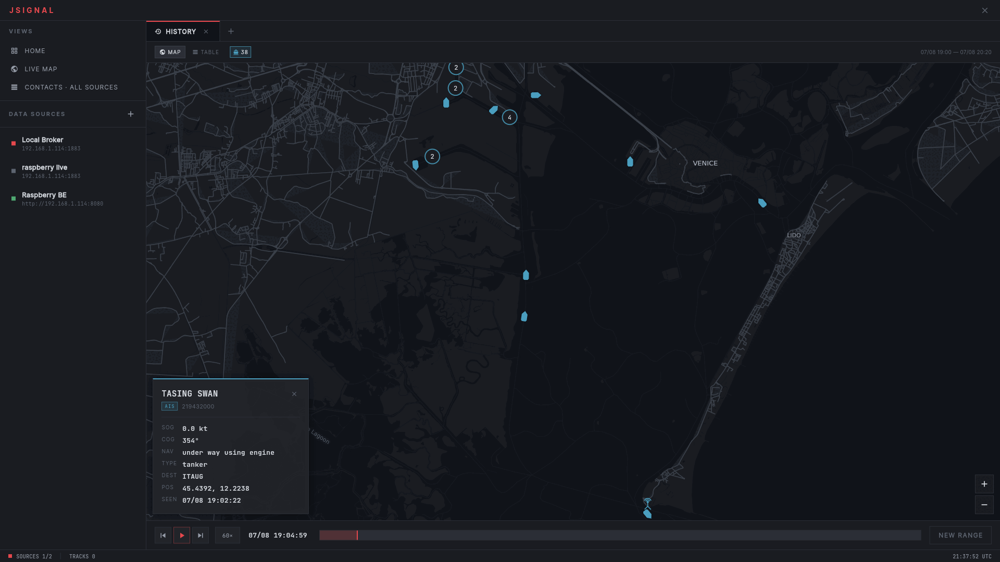
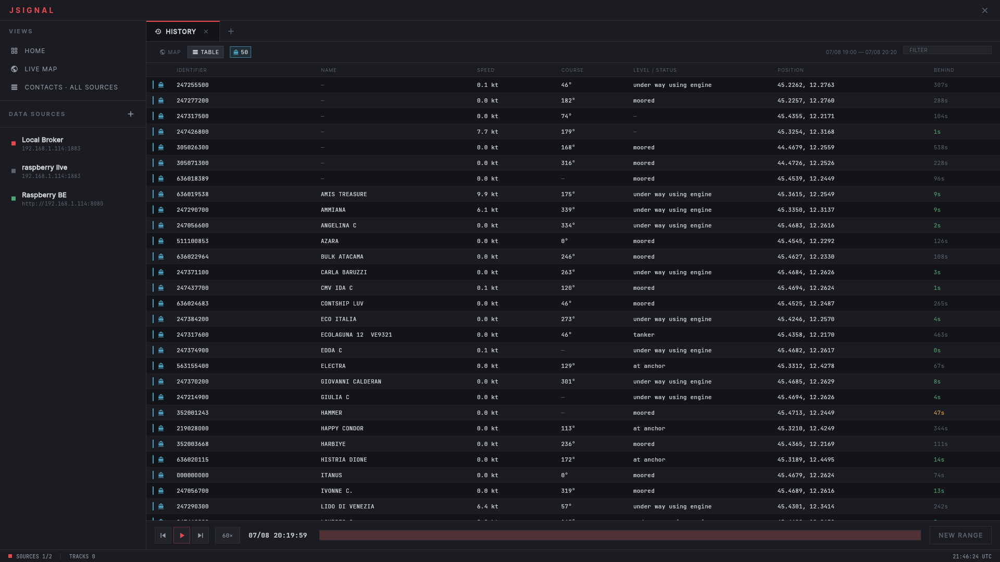

JSignal is a self-hosted toolkit to capture radio signals with an SDR, analyze them
and keep their history.
Protocols
- ADS-B
- aircraft on 1090 MHz, tracked by ICAO24
- AIS
- vessels on the marine VHF band, tracked by MMSI

The same player on AIS: a tanker leaving Marghera down the Malamocco channel.
Architecture
- adsb-module
(C++) — decodes Mode S at 1090 MHz, publishes JSON to MQTT.
- ais-module
(C++) — decodes AIS on the marine VHF band, publishes JSON to MQTT.
- jsignal-be
(Spring Boot) — records the MQTT traffic to PostgreSQL, serves the history over REST.
- jsignal-fe
(Flutter) — desktop console: live map, contact table, history playback.

The contacts table during an AIS replay.
Status
In active development. All captures on this page are my own, from the Venice lagoon.
Planned: RF drone detection with direction finding, and
ATAK-CIV support.